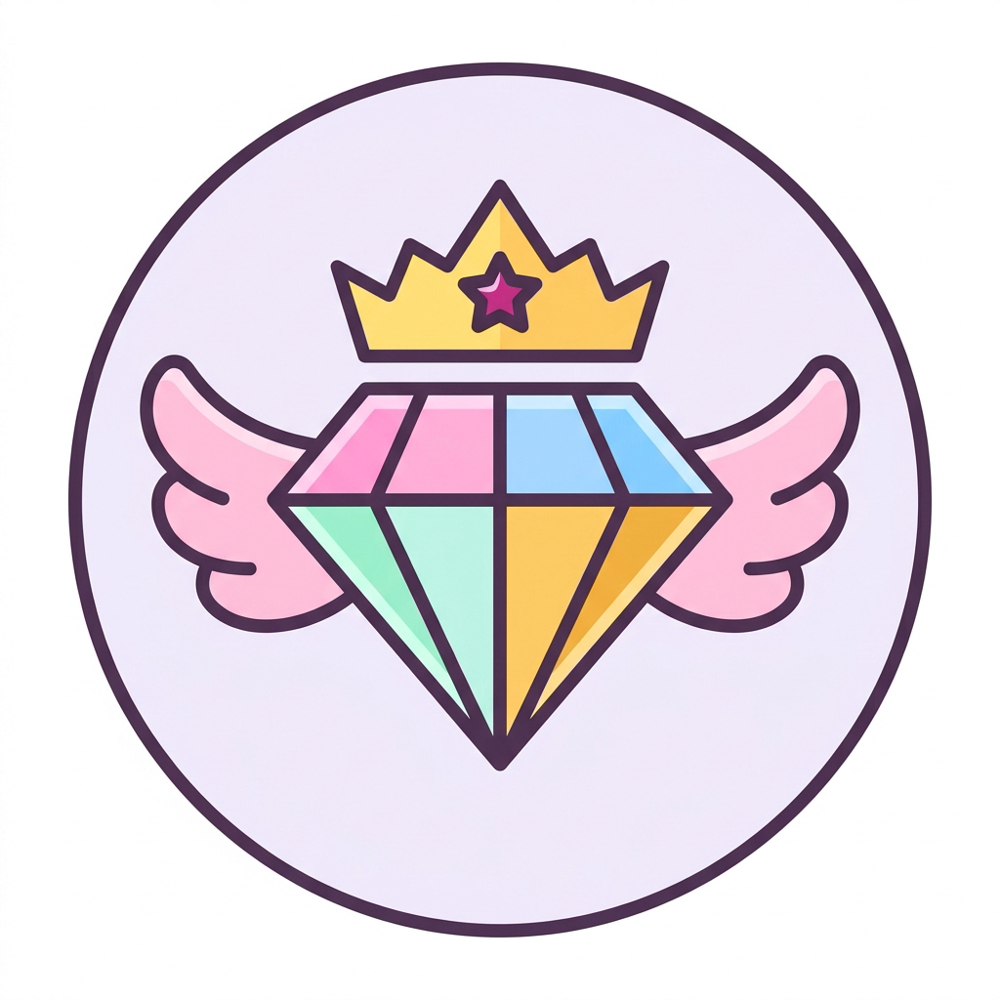

ValenQuest: Salón Principal de Lumiria

Reino de Lumiria • Salón de la Armonía
¡Bienvenida a tu Aventura en Lumiria!
Elige tu Misión de Aprendizaje:
Modo Campaña • Próximamente 🚧
La Gran Aventura de Lumiria
Templo 1: Manantial de Rocío
Los 10 templos de Lumiria se están puliendo mientras perfeccionamos la práctica. Explora el mapa y entrena en los modos libres: tus diamantes y poderes te esperarán.
Modos de Práctica y Entrenamiento Infinito:
El Prisma Numérico
Arcade de cálculo mental continuo con 5 niveles adaptativos y progresión mágica.
Entrar al Prisma Numérico →La Pluma de la Fluidez
Taller de fonética, silabeo RAE, lectura asistida por Orión y velocímetro RSVP.
Entrar a la Pluma de la Fluidez →